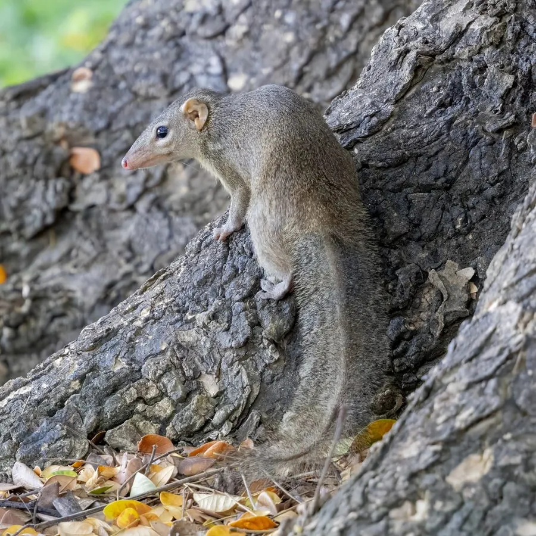

哺乳动物 · 动物界
树鼩 Tupaia belangeri

外形介于松鼠与鼩鼱之间的小型哺乳动物，吻尖尾长、善攀爬，食性杂，因与灵长类亲缘较近而被广泛用于医学研究。
- 分类
- 门脊索动物门纲哺乳纲目树鼩目科树鼩科属树鼩属
- 栖息环境
- 常绿阔叶林、竹林、灌丛、农地边缘与村落附近的树丛
- 地理分布
- 中国云南、广西、贵州南部，以及缅甸、泰国、越南、马来西亚等地
- 保护级别
- IUCN 无危（LC）；中国境内属受保护野生动物
物种志
树鼩体形纤细，成年体长 12–21 厘米，尾长 14–20 厘米，体重 50–180 克。吻部尖长，眼大而圆，耳短圆，毛被柔软，背毛橄榄褐至灰褐色，腹面浅黄或灰白，肩侧常有一条浅色纵纹；尾毛蓬松，略长于身体。四肢细长，前爪长而尖锐，能在树干和枝条间灵活攀爬，但不善长距离跳跃。
树鼩分布于中国西南至东南亚的常绿阔叶林、竹林、灌丛与农地边缘，昼夜均活动，以昆虫、果实、种子、嫩叶和小型脊椎动物为食，常在树根、倒木和石缝间搜寻。它多单独或成对活动，领域性较强，会用胸腹腺体分泌物在树枝上标记。繁殖期较长，孕期约 40–50 天，每胎 1–4 仔。树鼩在分类上与灵长类亲缘较近，是研究肝炎、视觉与脑科学的常用实验动物，因此也被大量人工繁育。
形态与习性
- 体长约 12–21 cm，尾长 14–20 cm
- 体重约 50–180 g
- 食性昆虫、果实、种子、嫩叶与小型脊椎动物
- 繁殖孕期约 40–50 天，每胎 1–4 仔，全年可繁殖
- 寿命野外约 2–3 年，饲养下可达 8 年
- 活动节律昼夜均活动，晨昏最活跃，善攀爬
- 科研价值与灵长类亲缘较近，常用于肝炎与神经科学研究
趣味知识
- 树鼩的肩侧常有一条浅色纵纹，是野外识别它的快捷特征。
- 它会用胸腹部的腺体在树枝上蹭出气味，标记自己的领域。
- 因为与灵长类亲缘较近，树鼩是医学实验中替代猴类的重要动物。